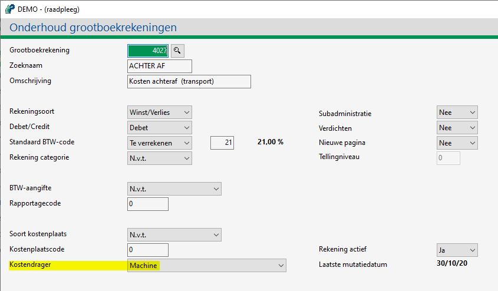
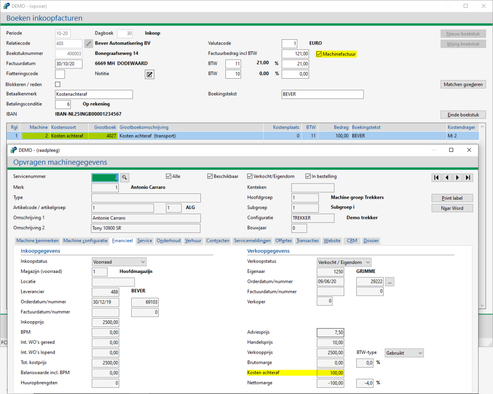
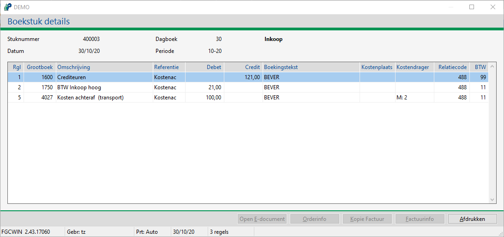
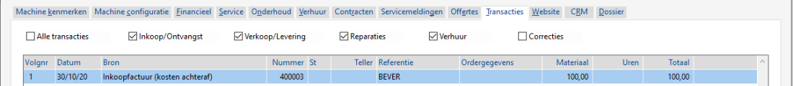

Nadat de machine en kostensoort achteraf opgegeven zijn, controleert Powerall Connect of bij de opgegeven grootboekrekening de kostendrager wel machine is.

Nadat een machine afgeleverd is, komt het voor dat er toch nog facturen binnenkomen die betrekking hebben op een machine. Denk aan externe transportkosten of een uitkering van extra inkoop korting.
Om deze kosten te boeken, doorloopt u de volgende stappen:
Ga naar Boeken inkooporder machines (KI).
Vul de gegevens in.
Vink machinefactuur aan.
In de regels:
Geef de machine in.
Bij kostensoort selecteer Kosten achteraf.
Geef eventueel de grootboekrekening in.
Deze grootboekrekening moet kostendrager machine hebben.
Geef overige gegevens in.

Bij Opvragen machines, tabblad Financieel is gelijk te zien dat het kosten achteraf bedrag bijgewerkt is.
De inkoopfactuur is geboekt.
Nadat de machine en kostensoort achteraf opgegeven zijn, controleert Powerall Connect of bij de opgegeven grootboekrekening de kostendrager wel machine is.

Bij Opvragen grootboekmutaties (GO) is de volgende journalisering te zien bij Info Boekstuk:

De volgende machinetransactie wordt geboekt, deze is o.a. zichtbaar bij Opvragen machines (MO), tabblad Transacties.

Bij Opvragen crediteurposten (KO) de openstaande post bij de crediteur.
De volgende kosten soort kan er geselecteerd worden, bij een machinefactuur, afhankelijk van de instelling:
| Kostensoort | Optie voor kostensoort bij Boeken inkoopfacturen optioneel bij een machinefactuur: --VERKOOP-- - Machine - BPM - Kosten achteraf (alleen geboekt op Kosten achter af bij Subadministratie machines is ja). - Overige kosten bij subadm. machine is ja ook geboekt op balans en inkoopwaarde, vanaf versie 3.28 -- EXPLOITATIE-- vanaf versie 3.28: - Verzekering - Keuring - Afschrijving - Opbrengst Instelling: soort bedrijf is motorbranche:. - Korting, als machine nog op voorraad is, wordt de rekening voorraad marge ingevuld, en de balanswaarde verhoogd. - Overige kosten, geboekt op machine bij Overige kosten. NB Bij Machine / BPM verschijnt bij een machine met inkoopstatus Besteld/ Voorraad, de gekoppelde grootboekrekening, via de artikelgroep. Bij Machine adm. 2.0 is nee, zijn deze kosten zichtbaar bij F8 Tabblad Transacties |
Copyright ©